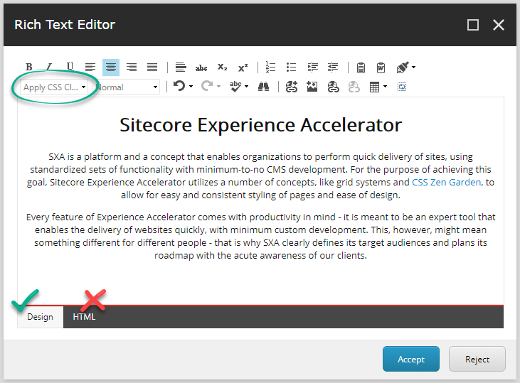
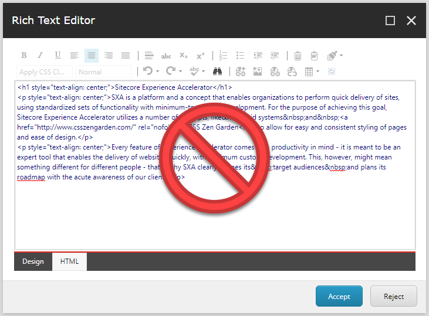

Recommendations: Using renderings
Think about what rendering to use and how to use it.
SXA comes with a library of predefined renderings and rendering variants to ensure modular component based design. You can also create a custom rendering (variant). Using renderings wisely can help you get work done more efficiently.
Avoid using versatile renderings such as Page Content, Page List, Promo, or Rich Text to render most of your page layout. Use the correct rendering for the purpose. Consider cloning the standard rendering and give it a name that describes the rendering's purpose.
For example, the names of the following clones of default renderings make it easy for business users to understand their purpose instantly:
Teaser (a clone of the Page Content rendering) that is configured to link to pages to tease their content.
Highlight or Call to Action (a simple copy of the Promo rendering) to provide a set of styles and rendering variants fit for the job.
For complex components, you might consider using the Rich Text rendering because it provides complete freedom regarding the HTML you can place in it. However, this way of adding content to a page can be difficult for your editors to work with because not all content editors know how to edit the HTML code. Consider using clones or variants instead of the Rich Text rendering.
Before using the Rich Text rendering, consider these other options:
Copy and customize and SXA rendering (such as the Promo rendering).
Create a more elaborate rendering variant. This way, you can take full control over the component markup (in the rendering variant) while still making the text and images editable for your editor. This is the preferred approach for visual components.
Note
This section is only applicable for the Content Editor and the Experience Editor, not Pages.
When providing texts that marketers are expected to maintain after the site is deployed you must never put in any markup or classes that cannot be maintained using the WYSIWYG editor.
|  |
If editors need to put classes on text elements (that you need to style in a specific way in your theme) you must add these classes to the Sitecore Rich Text Editor. In this way, they are available in the drop-down menu. Editors can then style the content without having to switch to the HTML view.
Also, you must make sure that the style is reflected in the appearance within the Rich Text Editor, to avoid surprises after the content publication.
|  |
If your pages need more elaborate HTML code, consider cloning a component, configuring a rendering variant, or creating a custom component, rather than placing complex HTML in the Rich Text field.